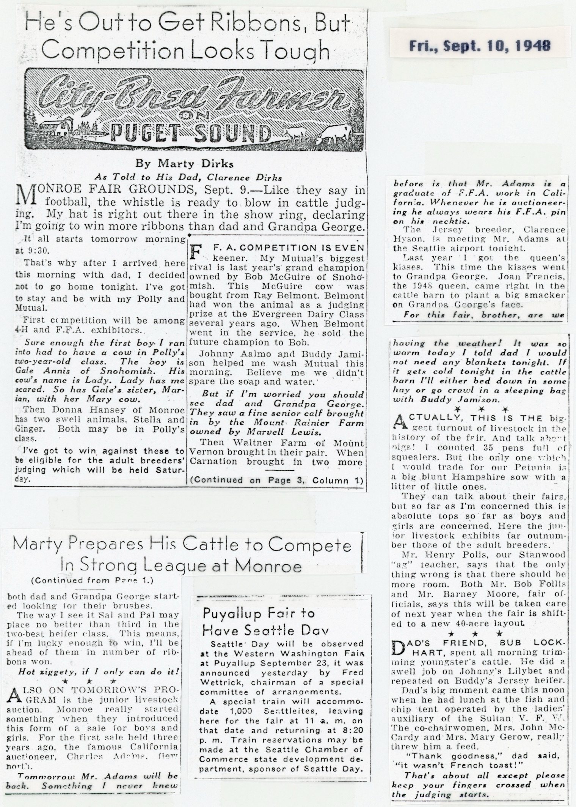
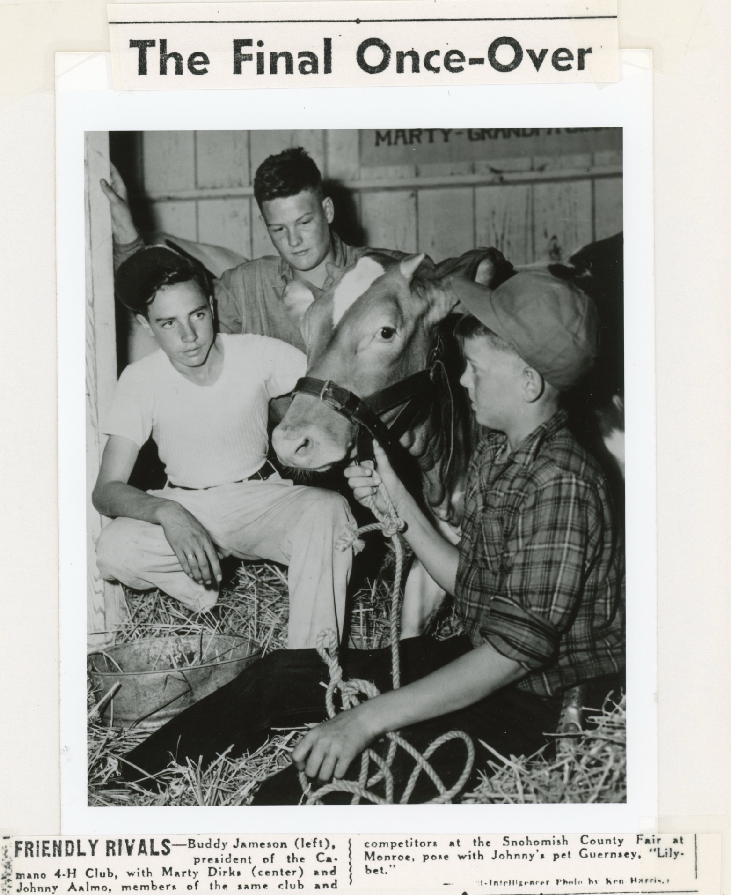
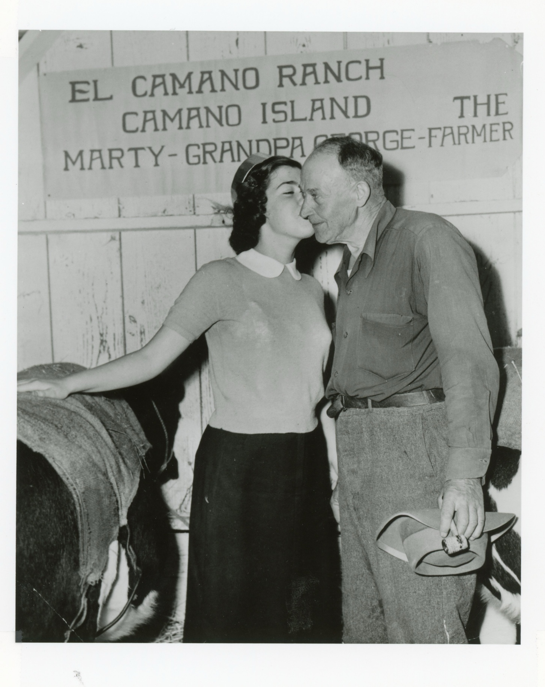
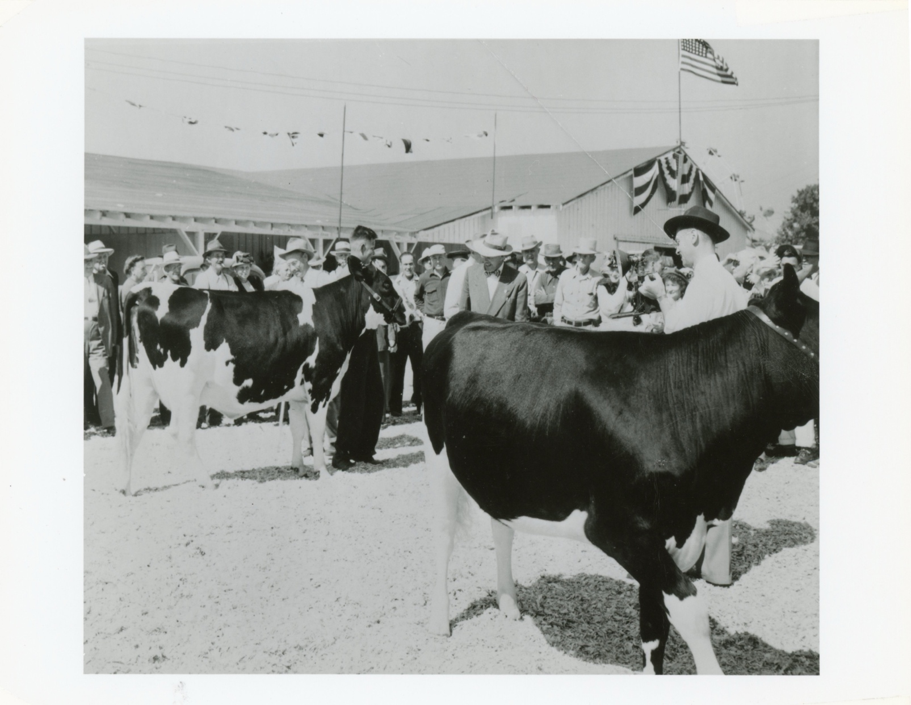

IT HAPPENED! -- Grandpa George gets kissed by Joan Francis in the cattle barn at the Monroe Fair Grounds. Grandpa looks a bit abashed, but pleased nonetheless. (Other pictures on page 3., Post-Intelligencer photo by Ken Harris.)

Marty’s entry in the Monroe Fair gets a once over by judges and interested spectators alike.